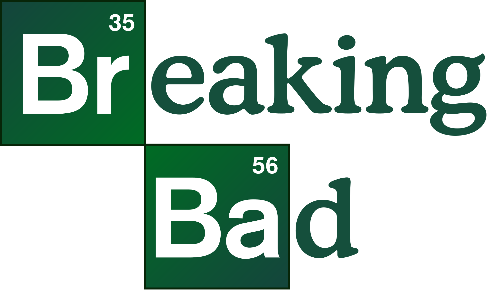
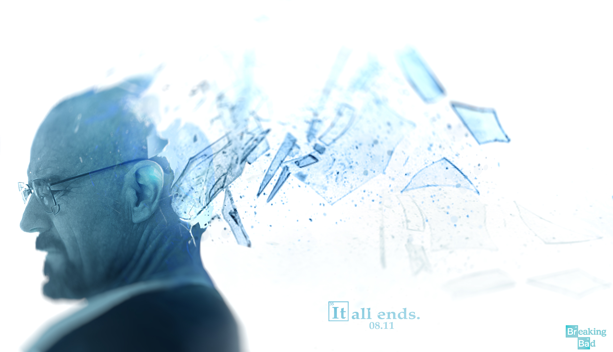
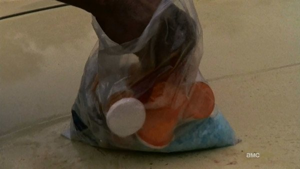
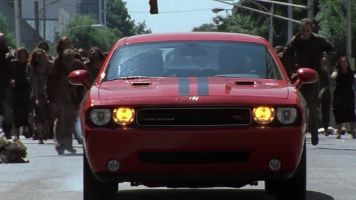
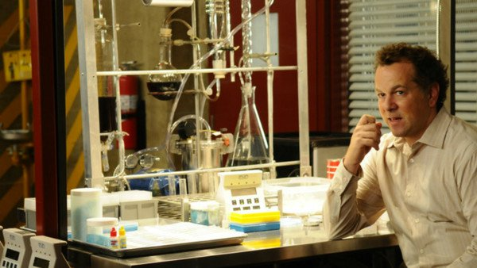
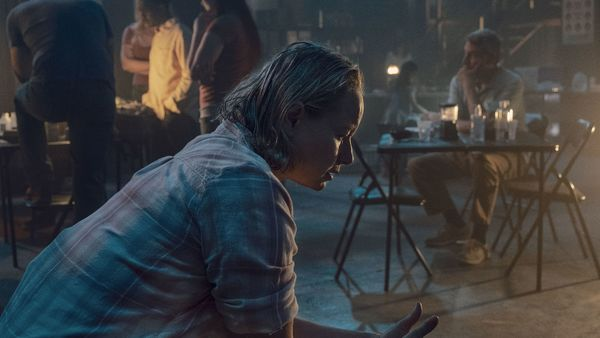
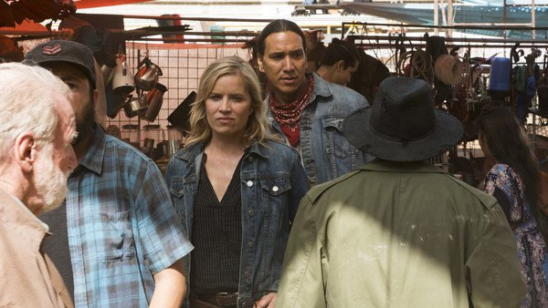
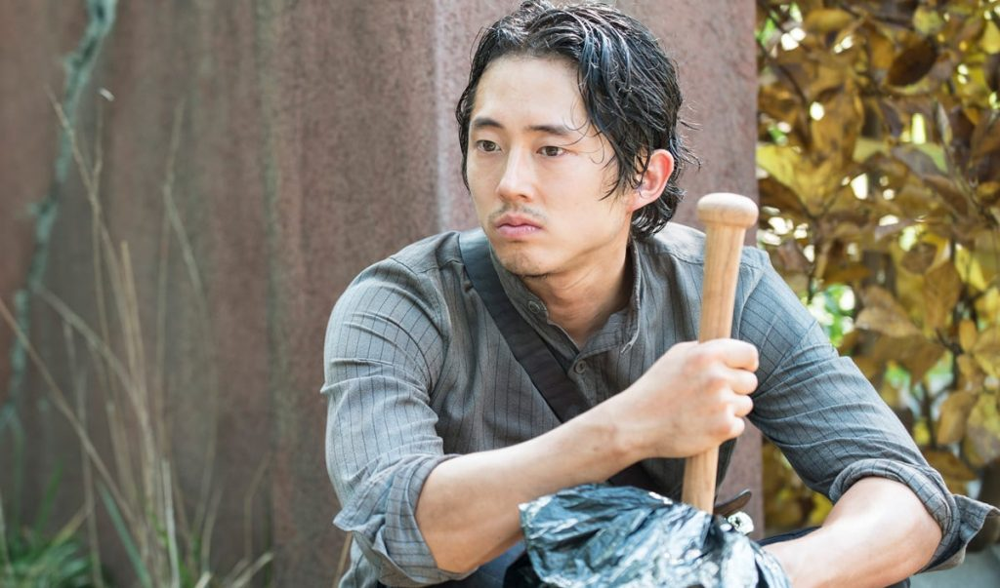
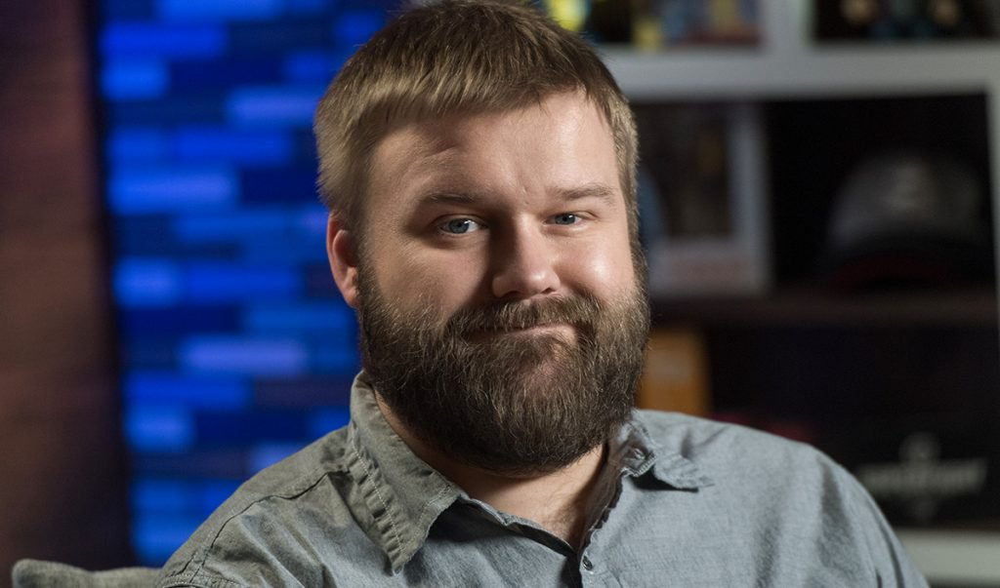

Breaking bad Desenvolvimento Personagens Elenco Prêmios Curiosidades
Os universos compartilhados não existem apenas nos filmes. Com a leva de séries de televisão que temos hoje, esses programas também aderiram à fantasia dos fãs em ver suas histórias favoritas coexistirem no mesmo mundo ficcional. E elas não precisam ser da mesma emissora. O Mundo Sombrio de Sabrina e Riverdale são um exemplo. A primeira é da Netflix, já a segunda da CW e mesmo assim foi confirmado que elas compartilham o mesmo universo.
No entanto, algumas vezes, a imaginação dos fãs vai longe demais, como no caso de Breaking Bad e The Walking Dead. Há tempos, existe a teoria de que as duas séries se passam no mesmo universo. A primeira seria uma espécie de prelúdio (óbvio) da segunda. A ideia é alimentada por várias pessoas e até os criadores e atores têm conhecimento dela. Para sustentar (ou ao menos tentar) sustentar essa teoria, selecionamos alguns easter-eggs de Breaking Bad em The Walking Dead que, talvez, você não tenha visto.

Um dos maiores símbolos de Breaking Bad é a metafetamina azul que Walter White fabrica ao lado de Jesse Pinkman. De certa forma, esses pequenos cristais movem a trama e, assim, foram parar longe. Na segunda temporada de The Walking Dead, a turma procura por medicamentos para T-Dog. Daryl tenta ajudar vasculhando a sacola de drogas do irmão. Dentro dela, podemos ver algo que se assemelha bastante à metafetamina produzida em Breaking Bad.

Quando as coisas estão indo bem, Walter compra um carro para seu filho. Nada menos que um Dodge Challenger vermelho, com listras duplas pretas no capô e na traseira. Pois bem, um carro muito parecido é visto no segundo episódio de The Walking Dead, dirigido por Glenn, quando este tenta fugir de uma horda de zumbis.

Na terceira temporada de Breaking Bad, o químico Gale Boetticher exibe sua máquina de café. O design foi feito por ele mesmo ao adaptar acessórios de laboratório a fim de tornar o café melhor pelo meio do processo. Curiosamente, parece a mesma máquina vista também na terceira temporada de The Walking Dead. No mesmo episódio, o Governador ainda cita um habitante da cidade conhecido como Heisenberg.

Talvez este seja um dos easter eggs mais recentes de The Walking Dead. Na nova temporada, quando Lydia está em cativeiro, vemos flashbacks de sua vida. Com eles, descobrimos que sua mãe costumava cantar uma canção de ninar conhecida como Lydia The Tattooed Lady, tirada da série infantil Muppet Show. Na quinta temporada de Breaking Bad, logo após a morte de Todd, seu celular toca e adivinha qual música está como toque?

O caso não foi exatamente em The Walking Dead, mas no seu spin-off Fear The Walking Dead. Em um episódio da terceira temporada, vemos Madsion e Qaletaqa caminhando por um bazar mexicano. A música do ambiente pode ter soado familiar para os fãs do Heisenberg. A canção intitulada Negro y Azul é cantada pela banda Los Cuates de Sinaloa e aparece no episódio de mesmo nome de Breaking Bad. Apesar de ser apenas uma música, a letra é bem específica, por isso fica difícil acreditar em coincidências desse tamanho.

Lembra do Dodge Challenger vermelho comprado por Walter para seu filho e supostamente visto com Glenn em The Walking Dead?! Pois então, na quarta temporada Skyler negociou a devolução do veículo por uma taxa combinada. Ela avisa a Walter que ele terá de procurar e falar com o gerente que, olha só, se chama Glenn. Tudo bem, no começo de The Walking Dead o personagem diz a Rick que trabalhava como entregador. Mesmo assim, depois de tudo, não deixa de ser algo curioso.

Os criadores Vince Gilligan e Robert Kirkman já admitiram a existência do universo compartilhado entre Breaking Bad e The Walking Dead. Ao ser questionado sobre o que teria causado o surto de zumbis da história durante o painel de Fear The Walking Dead na San Diego Comic Con, a produtora Anne Hurd respondeu: "Foi a metafetamina de Breaking Bad, com certeza". Ao passo que Kirman, aos risos, completa: "Isso é cânone. Está confirmado!".
Claro, eles estavam apenas brincando com os fãs. A teoria que as duas séries têm ligação é bem famosa e Vince Gilligan já comentou adorar a ideia. Assim com o próprio Bryan Cranston. Apesar dos dois universos serem bem diferentes, não custa nada imaginar as conexões.